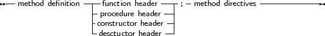
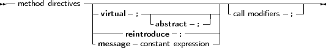

Declaration of methods in classes follows the same rules as method declarations in objects:
_________________________________________________________________________________________________________methods


___________________________________________________________________